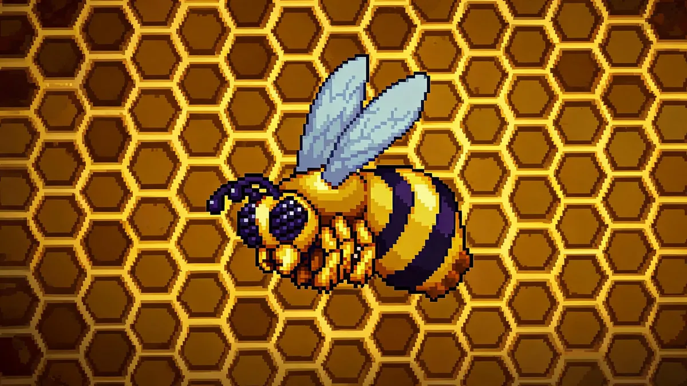

Queen Bee Guide —Jungle's Wrath

| Property | Details |
|---|---|
| HP | 3,000 (Normal) / 5,400 (Expert) / 6,885 (Master) |
| Damage | 30 (Normal) / 54 (Expert) / 81 (Master) —varies by charge speed |
| Defense | 8 |
| KB Resistance | 100% |
| Spawn | Destroy a Bee Hive in the Underground Jungle or use an Abeemination anywhere in the Jungle |
Enrages Outside the Jungle
Queen Bee enrages if you fight her outside the Underground Jungle. She turns into a rage mode with drastically increased speed and damage. Always fight her in the Jungle biome.
Summoning
There are two ways to summon Queen Bee:
- Destroy a Bee Hive —Bee Hives are the yellow/orange honeycomb blocks found in the Underground Jungle. Break one and Queen Bee spawns immediately. This is the natural way and you'll find them while exploring.
- Abeemination —Crafted from 5 Honey Blocks + 5 Hive + 1 Stinger + 2 Bottled Honey at a Demon Altar. Use it anywhere in the Jungle biome.
Recommended Gear
- Armor: Gold/Platinum is fine. Crimson armor with its life regen set bonus is excellent for this fight.
- Weapons: A bow with Jester's Arrows or a Boomstick. The Enchanted Boomerang also works. Anything with piercing is valuable for clearing the summoned bees.
- Accessories: Hermes Boots, Shield of Cthulhu (Expert from Eye of Cthulhu —the dash is very useful here), Cloud in a Bottle.
- Potions: Ironskin, Regeneration, Swiftness, and a Healing Potion stack.
Arena Setup
Find a large open area in the Underground Jungle. Clear out walls and obstructions to create a 50x30 block open space. Place 2-3 rows of platforms for vertical movement. A Campfire and Heart Lantern in the center help with survivability. Remove any nearby Bee Hives to avoid accidental respawns.
Strategy
Phase 1 —Direct Attacks
Queen Bee alternates between three attacks in predictable cycles:
- Charge —she pauses briefly, then dashes horizontally. Jump over or drop through a platform to dodge.
- Hover and sting —she hovers above you and dives down with her stinger. Move sideways just before she dives.
- Shoot stingers —she fires a spread of stingers from above. These are easy to dodge with horizontal movement.
Stay mobile. Circle around the arena using platforms for vertical dodges. The fight is about pattern recognition —each attack has a clear tell before it happens.
Phase 2 —Bees!
Below 50% HP, Queen Bee starts summoning small bees in addition to her regular attacks. The bees are more annoying than dangerous —they deal 10-15 damage each and can swarm you. Use a piercing weapon to clear them, or let them accumulate and use a Shield of Cthulhu dash to burst through them.
Expert Mode
In Expert, Queen Bee shoots stingers that inflict the Poisoned debuff. Bring Bezoars or the Philosopher's Stone to speed up debuff recovery. She also charges faster and spawns bees more frequently.
Rewards —What's Worth Your Time
- Beenades (15-30) —Worth farming. Beenades are incredibly effective against the Wall of Flesh. Throw a stack and watch bees melt the Hungry. Many players farm Queen Bee specifically for these before fighting the Wall.
- Bee Gun —Transitional. A fun magic weapon that fires homing bees. Good against the Wall of Flesh but outclassed quickly in Hardmode.
- Bee armor —Transitional. Increases minion damage for summoners. Useful through the Wall of Flesh fight.
- Honey Comb —Transitional. Releases bees when you take damage. Nice for exploring but not essential.
- Witch Doctor —This NPC arrives after you defeat Queen Bee, regardless of how many times you fight her. He sells useful accessories and the Leaf Wings later in Hardmode.
Related Guides
- Wall of Flesh Guide —bring Beenades!
- Boss Progression Order
- Best Weapons by Stage